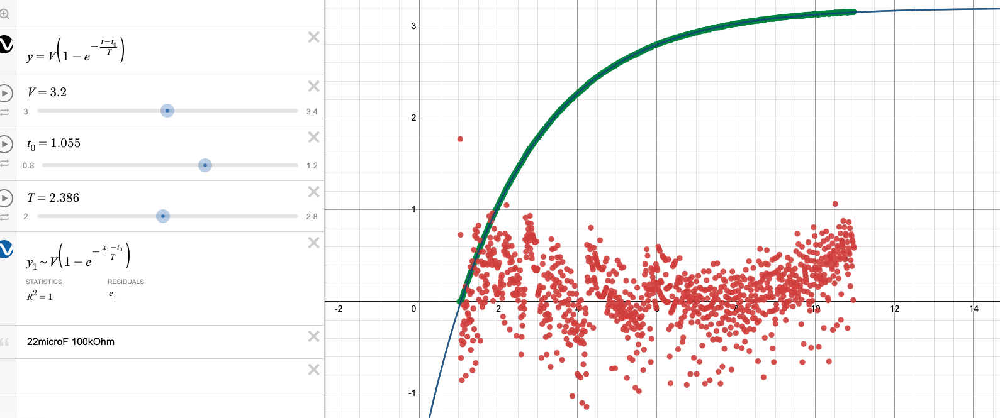

Source: [[2020PHYS201/KBe20phys250retCapacitorsLab.md]]
#ret #disorganized #incomplete
Introduction
The purpose of this lab is to verify the relation between capacitance, resistance, voltage, and charge time of a simple capacitor circuit. The equation that will be verified is \[V_{cap} = V_{bat}\left(1-e^{-\frac{t}{\tau}}\right)\] where each variable has the following meaning:
| Variable | Units | Description |
|---|---|---|
| \(t\) | Seconds (s) | Time elapsed since charging of the capacitor started. May be represented as \(t-t_0\), where \(t\) is the current absolute time and \(t_0\) is the absolute start time. |
| \(V_{cap}\) | Volts (V) | Voltage across the capacitor after a given elapsed time |
| \(V_{bat}\) | Volts (V) | Voltage of the battery, assumed to be constant. |
| \(\tau\) | Seconds (s) | “Time constant” that scales the equation to the circuit. Equal to the product of the resistance and capacitance of the circuit (\(RC\)), and roughly equal to the number of seconds required to charge the capacitor to \(\frac{2}{3}\) of \(V_{bat}\). |
Charging Capacitors
Voltage over Time
A number of circuits were built and capacitors measured using a voltage and amperage probe with Logger Pro. The raw data can be found on Canvas. Desmos was used to manually fit curves to the data, using a modified version of the model with \(t\) and \(t_0\) variables to truncate scrap data: \[V_{cap} = V_{bat}\left(1-e^{-\frac{t - t_0}{\tau}}\right)\]
The results of the fits are summarized below:
 


Charge Stored
Time Constant with Various Components
Most of the analysis for data collected as a class was done on the “charge rate constant” (time/RC) of each circuit, defined as: \[\frac{t}{RC}\]
time/RC is a unitless scalar that represents how quickly it takes to charge any capacitor for a given voltage. Voltage data was not collected during the experiment, so the voltage is assumed to be constant across trials. If our model of capacitor charge rate is correct, we expect time/RC to be constant across trials. The actual data was skewed right:
By comparing the time/RC and different properties of each circuit, reasoning for the outliers may be deduced. The visualization of the histogram is reflected in each of the following charts by the density of points in a column.
First, the time/RC values were compared with the resistance of the circuit:
Although some outliers came from circuits with high resistance, the most skewed ones came from those with least resistance. The same can be said of capacitance:
Finally, the comparison with time taken to charge the capacitor shows the strongest correlation, which is to be expected because according to the model, this value is the product of the previous two trends.
On explanation for the data skew is reaction time: for lower values of \(\tau\), the capacitor plateaus faster near 2V and thus the time keeper may not react as quickly. Components with smaller ratings also need tighter tolerances to achieve the same relative tolerances, so smaller capacitors may have relatively higher manufactured variability.
The source analysis for these conclusions can be found here.